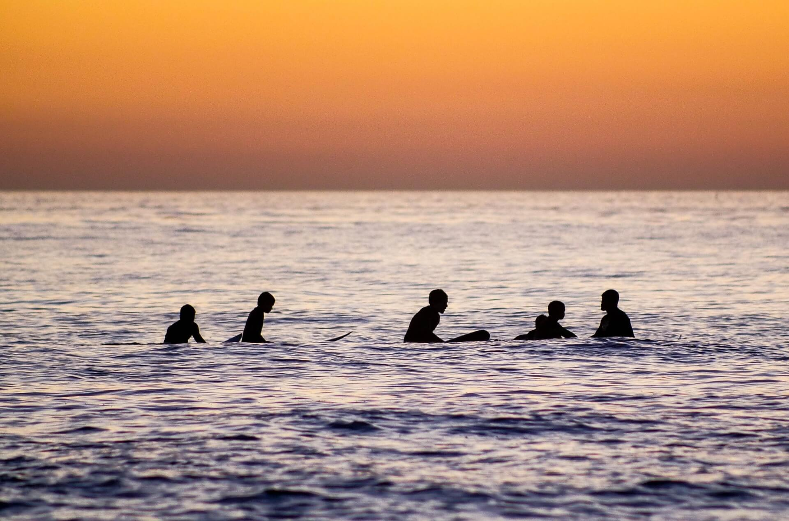

Tram 28 Avontuur
Tram 28 is een iconische attractie in Lissabon. Deze historische tram slingert zich een weg door de heuvelachtige
straten en neemt je mee op een kunstzinnige reis door de stad. Onderweg passeer je enkele van de meest adembenemende
bezienswaardigheden, waaronder het imposante São Jorge-kasteel en de historische wijk Alfama. Het is een leuke en
prachtige manier om de stad te verkennen en te genieten van het uitzicht tijdens je tramrit.
Let wel op, het kan erg druk zijn aangezien het wel een populaire touristische attractie is.
Onlangs de drukte vond ik het zeker de moeite waard!
Het sprookjesachtige Sintra
Op slechts 30 minuten met de trein van Lissabon ligt het plaatsje Sintra, een betoverend stadje dat als een sprookje tot leven komt.
Het hoogtepunt is het kleurrijke Paleis van Pena, een architectonisch meesterwerk op een heuveltop,
omgeven door prachtige bossen. Het is een historisch paleis dat pas volledig werd voltooid in 1852 terwijl ze al veel eerder begonnen zijn met bouwen.
Het paleis beslaat zo'n 200 hectare en bevat vele bruggen, fontijnen en beelden. Het is echt een genot voor het oog.
Sintra staat ook bekend om een prachtig kasteel, De Quinta da Regaleira. Met zijn geheime grotten en mystieke tuinen, biedt het kasteel een prachtige ervaring.
Na het bezichtigen van sintra's kasteel en paleis kan je langs de charmante straten van sintra. Deze straten nodigen uit tot wandelingen, winkelen en proeven van lokale gerechten.
Een dagtocht naar Sintra is als een duik in de wereld van sprookjes en geschiedenis, en een absolute aanrader voor elke Lissabon bezoeker.
Surfen bij de kust van Lissabon

Lissabon, met zijn prachtige stranden en gunstige ligging aan de Atlantische Oceaan, biedt surfers een geweldige ervaring.
Langs de kustlijn van Lissabon vind je talloze surfspots geschikt voor zowel beginners als ervaren surfers.
Of je nu de ruige golven van Praia do Guincho wilt trotseren of liever kiest voor de zachtere deining van Costa da Caparica, er is voor elk wat wils.
Surfscholen en verhuurwinkels zijn ook gemakkelijk te vinden, en ervaren instructeurs staan klaar om je alle tips en tricks te leren.
Surf in de ochtend, geniet van de zon in de middag en sluit je dag af met verse visgerechten in een van de gezellige strandrestaurants.
Lissabon biedt niet alleen een unieke stedelijke ervaring, maar ook een onvergetelijke surfervaring langs de kustlijn.
Ervaar het Nachtleven van Lissabon in Bairro Alto
Wanneer de zon ondergaat in Lissabon, komt de historische wijk Bairro Alto tot leven als het kloppende hart van het nachtleven.
Deze historische buurt transformeert 's avonds in een bruisend feestgebied vol jongeren.
Dwaal door de smalle straatjes, waar kleurrijke gevels met street art een kunstzinnige sfeer creëren.
Hier vind je talloze bars en clubs, waarvan sommige al tientallen jaren bestaan. Muziek van verschillende genres,
van Fado en live jazz tot hedendaagse pop en elektronische beats.
De lokale bevolking en toeristen komen samen om te dansen, te lachen en te genieten van heerlijke cocktails en Portugese wijn.
De energieke sfeer en vriendelijke mensen maken Bairro Alto tot de perfecte plek om het nachtleven van Lissabon te verkennen en herinneringen te maken die je nooit zult vergeten!